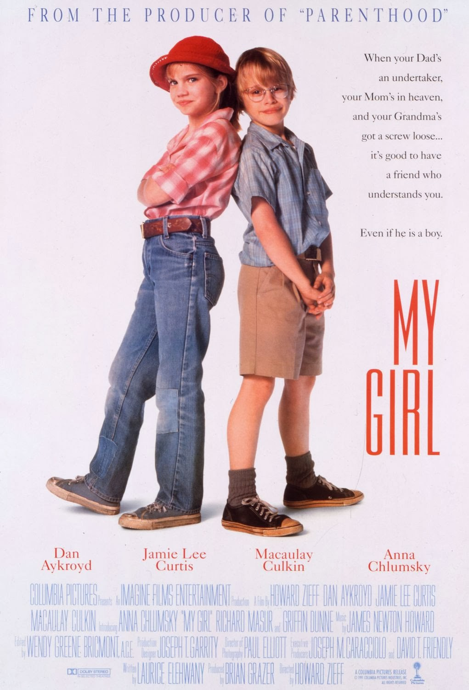

|  | Meu Primeiro Amor
Direção: Howard Zieff
Elenco: Anna Chlumsky, Macaulay Culkin, Dan Aykroyd
Vada Sultenfuss, uma garota de 11 anos, é obcecada com a morte, pois sua mãe morreu quando a garota nasceu e seu pai, Harry Sultenfuss, é um agente funerário que não lhe dá muita atenção. Vada é apaixonada por Jake Bixler, seu professor de inglês, e é muito amiga de Thomas J. Sennett, um garoto que é alérgico a tudo. Quando Harry contrata Shelly DeVoto, uma maquiadora, para os funerais e se apaixona por ela, Vada se sente rejeitada e quer fazer qualquer coisa para separá-los. |
|
Acesse mais em YouTube SESSÕES
|